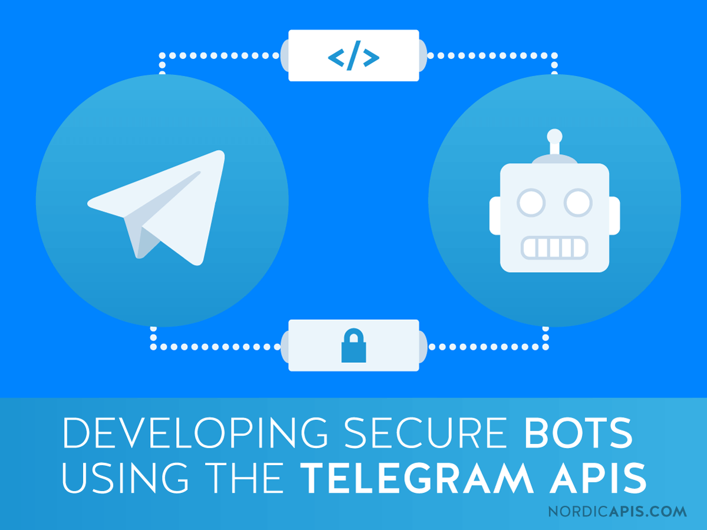

Technology
Technology used in Project

Tensorflow
Tensorflow to train NLP model
1. Not all the data is present in a standardized form. Data is created when we talk, when we tweet, when we send messages on Whatsapp and in other activities. 2. The majority of this data is in the textual form, which is of a highly unstructured nature. While having data of high dimensions, the information stored therein is not directly available unless it is manually interpreted (understand by reading) or analyzed by an automated device. 3. Techniques and principles of Natural Language Processing (NLP) are used to gain meaningful insights from text data. Natural language processing (NLP) supplies the majority of data available to deep learning applications, while TensorFlow is the most important deep learning framework currently available.Heroku
Heroku is a cloud platform as a service (PaaS) supporting several programming languages.
One of the first cloud platforms, Heroku has been in development since June 2007, when it supported only the Ruby programming language, but now supports Java, Node.js, Scala, Clojure, Python, PHP, and Go. For this reason, Heroku is said to be a polyglot platform as it has features for a developer to build, run and scale applications in a similar manner across most languages.

BOT API
This API allows you to connect bots to our system. Telegram Bots are special accounts that do not require an additional phone number to set up. These accounts serve as an interface for code running somewhere on your server.
To use this, you don't need to know anything about how our MTProto encryption protocol works — our intermediary server will handle all encryption and communication with the Telegram API for you. You communicate with this server via a simple HTTPS-interface that offers a simplified version of the Telegram API.